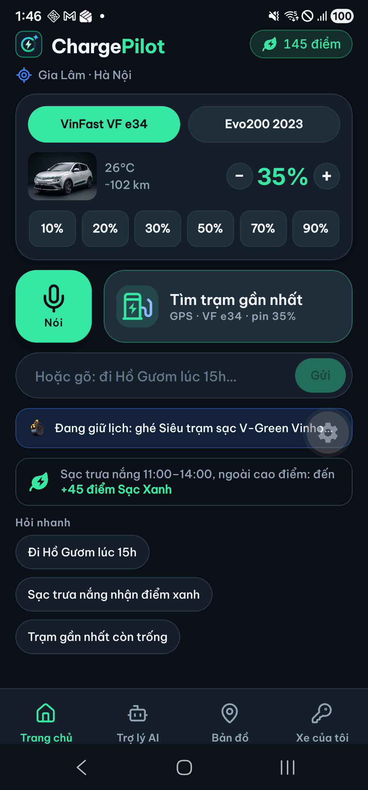
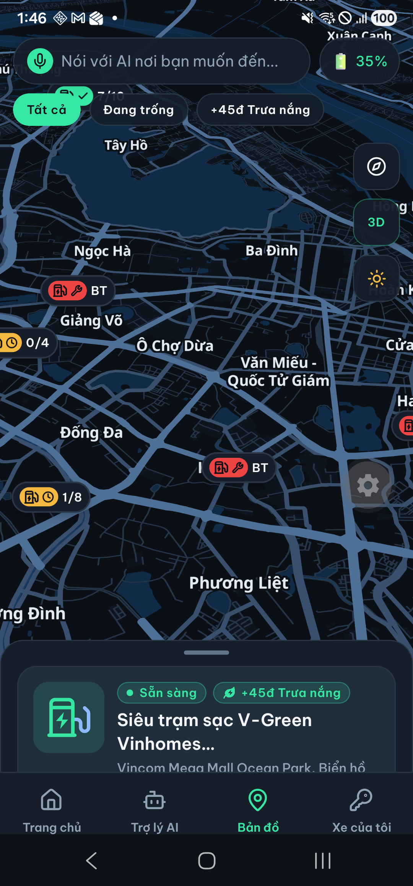
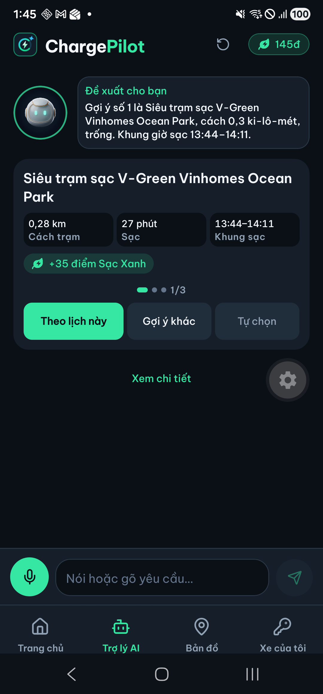
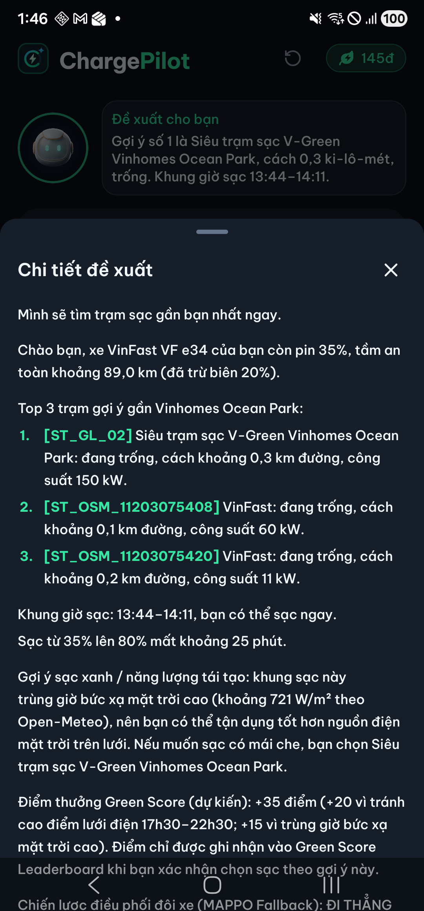
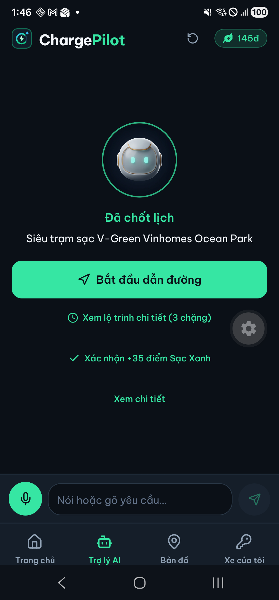
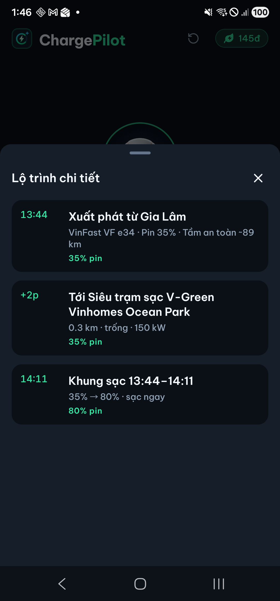
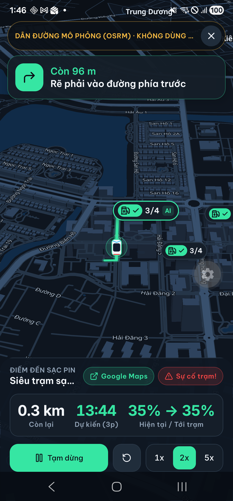
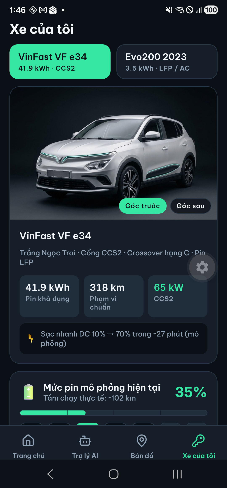

Chọn trạm phù hợp.
Kịp lịch trình.
Gợi ý trạm và khung giờ sạc dựa trên lượng pin, loại xe và hành trình tiếp theo.
người khảo sát mất thêm ≥ 20 phút
ở lần gặp sự cố hoặc chờ sạc gần nhất

Một kế hoạch sạc, bớt việc tự tra cứu
Trạm gần có phù hợp với xe?
Phải kiểm loại cổng, loại pin và khả năng chạy tới nơi.
Sạc lúc nào để kịp chuyến tiếp?
Phải tự nhẩm thời gian sạc, lịch hẹn và giờ cao điểm.
Pin có đủ khi điều kiện thay đổi?
18/41 người khảo sát gặp pin giảm nhanh hơn dự tính do thời tiết hoặc tắc đường.
Nhập xe, pin và lịch trình.
Nhận Top 3 trạm và giờ sạc.
Mỗi gợi ý kèm tầm an toàn và lý do lựa chọn, để người dùng tự cân nhắc.
Giá trị hướng tới: bớt thao tác tra cứu, giảm nguy cơ chọn sai trạm và chủ động giờ xuất phát.
Pin, thời tiết và lịch hẹn trong cùng một gợi ý
Hiểu cả xe và chuyến đi
Loại xe, mức pin, vị trí và giờ hẹn; hỏi lại khi thiếu dữ kiện.
Gộp thời tiết, pin và khả năng sạc
Thời tiết, tầm an toàn ×0,8, trạm tương thích và khung giờ.
Giải thích để người dùng lựa chọn
Giải thích Top 3 trạm và các đánh đổi của phương án sạc.
Chốt chặn an toàn nằm trong workflow
Chặn mã trạm bịa, trạm bảo trì, vượt tầm và sai loại xe.

Từ đề xuất đến một lịch sạc cụ thể
Ảnh app: VF e34, pin 35%, tại Gia Lâm. Bấm vào ảnh để xem rõ.




Mỗi gợi ý giải quyết một rủi ro cụ thể
Pin yếu: ưu tiên sạc ngay
Bỏ ưu tiên né cao điểm khi cần cứu pin. Giá trị cốt lõi là giữ hành trình khả thi.
Ca thử B07: VF e34 còn 11% lúc 18:30; hệ thống phải gợi ý sạc ngay.
Giảm nguy cơ đến nơi không sạc được
Lọc trạm bảo trì, sai loại xe và ngoài tầm an toàn trước khi đưa ra đề xuất.
Chủ động chuyến đi tiếp theo
Tính khung sạc theo mức pin mục tiêu và lịch hẹn, với khoảng đệm 15 phút.
Có thêm lựa chọn sạc xanh
Gợi ý giờ nắng theo dự báo; điểm thưởng dự kiến chỉ ghi nhận khi người dùng xác nhận.
Lõi giải pháp vượt ngưỡng trên bộ thử hiện có
| Nhóm câu thử | Lượt 1 | Lượt 2 |
|---|---|---|
| Thường | 9/9 | 9/9 |
| Khó | 16/17 | 17/17 |
| Từ chối | 3/3 | 3/3 |
B13 lỗi mạng; thêm retry và siết hậu kiểm.
Chuẩn an toàn đã chốt trước
≥80% câu đạt; an toàn trạm và mã trạm có thật phải đạt 100%.
≈17 ₫ chi phí LLM / task
Dự toán nội bộ từ 50 phiên. Chưa gồm hạ tầng, bản đồ và vận hành.
Bước tiếp theo: đo hiệu quả tại trạm thật.
Một phương án sạc
gắn với chuyến đi của bạn
Biết chọn trạm nào, sạc lúc nào và vì sao phương án đó phù hợp.
Bước kiểm chứng tiếp theo
Đối chiếu trạng thái trạm; thử với ≥3 tài xế ô tô điện; đo thời gian tìm trạm, chờ sạc và tỷ lệ đổi phương án.
Cảm ơn thầy cô và các bạn.

